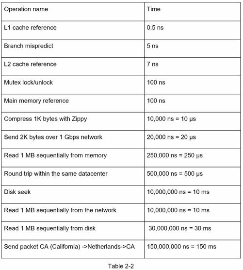
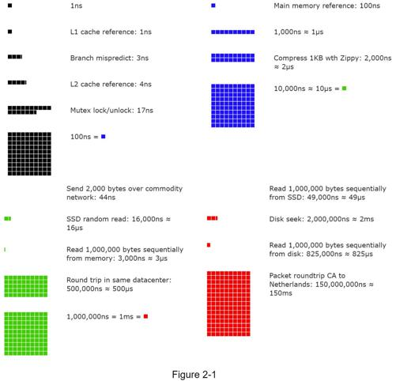

Dr. Dean from Google reveals the length of typical computer operations in 2010 [1]. Some numbers are outdated as computers become faster and more powerful. However, those numbers should still be able to give us an idea of the fastness and slowness of different computer operations.

Notes
-----------
ns = nanosecond, µs = microsecond, ms = millisecond
1 ns = 10^-9 seconds
1 µs= 10^-6 seconds = 1,000 ns
1 ms = 10^-3 seconds = 1,000 µs = 1,000,000 ns
A Google software engineer built a tool to visualize Dr. Dean’s numbers. The tool also takes the time factor into consideration. Figures 2-1 shows the visualized latency numbers as of 2020 (source of figures: reference material [3]).

By analyzing the numbers in Figure 2-1, we get the following conclusions:
•Memory is fast but the disk is slow.
•Avoid disk seeks if possible.
•Simple compression algorithms are fast.
•Compress data before sending it over the internet if possible.
•Data centers are usually in different regions, and it takes time to send data between them.